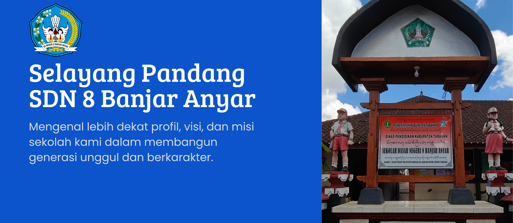

Sambutan Kepala Sekolah
Made Arcita, S.Pd., M.Pd.
"Selamat datang di SD Negeri 8 Banjar Anyar. Kami berdedikasi membangun generasi cerdas dan berkarakter melalui 7 Kebiasaan Anak Indonesia Hebat."


"Selamat datang di SD Negeri 8 Banjar Anyar. Kami berdedikasi membangun generasi cerdas dan berkarakter melalui 7 Kebiasaan Anak Indonesia Hebat."
"Terwujudnya peserta didik yang berakhlak mulia, cerdas, terampil, dan berwawasan lingkungan."
Melihat lebih dekat suasana belajar dan fasilitas yang ada di sekolah kami.
Catatan aktivitas dan pengumuman resmi yang dipublikasikan di akun Facebook SD Negeri 8 Banjar Anyar.
"Semangat pagi! Pembiasaan 7 Kebiasaan Anak Indonesia Hebat berjalan lancar hari ini. Anak-anak tampak antusias diawali dengan doa bersama dan senam pagi. Mari ciptakan lingkungan sekolah yang sehat dan menyenangkan!"
"Pengumuman: Kegiatan Ekstrakurikuler Tari Bali dan Pramuka minggu ini tetap berjalan sesuai jadwal biasa. Diharapkan seluruh siswa membawa perlengkapan masing-masing."
"Selamat Hari Sumpah Pemuda! Bersama kita wujudkan generasi muda SD Negeri 8 Banjar Anyar yang tangguh, cerdas, berbudaya, dan berakhlak mulia."
Mengajar: Guru PJOK
Mengajar: Guru Kelas 1
Mengajar: Guru Agama Hindu